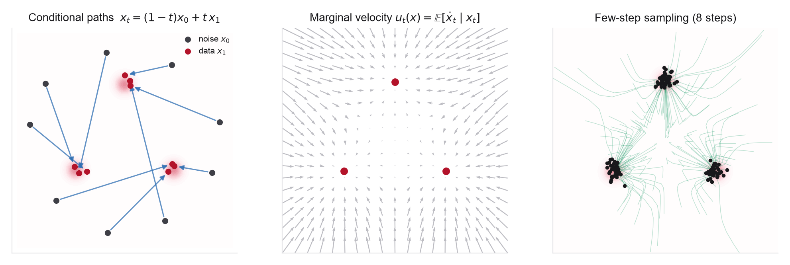

3.1Orientation
A probability path is any interpolation between a base density and the data; flow matching regresses a velocity field onto a path you pick, rather than one handed down by a noising process. Most of what follows, including why the method scales, comes down to choosing the path well.

Week 2 left you with a working but slightly awkward object: the probability-flow ODE, a deterministic flow whose velocity is built from the score, but whose path is inherited from a Gaussian noising process fixed in advance. That path curves, and curved paths cost solver steps. Week 3 asks the obvious question. If the probability-flow ODE is just a Week 1 flow, why accept the diffusion path at all? Flow matching chooses the interpolation between base and data directly and regresses a velocity onto it. The simplest choice, the straight conditional interpolant \(x_t=(1-t)x_0+t x_1\), makes each conditional path a straight line; the field the network actually learns is the marginal velocity, the conditional expectation of those per-sample velocities given the current state. This is exactly the conditional-mean regression you used for the denoising objective in Week 2 and first met in Week 1 Problem 5, now applied to a velocity instead of a score.
Two facts make this more than a change of coordinates on diffusion. First, the objective is simulation-free: the intractable marginal-matching loss and the tractable conditional loss have the same gradient, so training is plain regression with no ODE solve, no divergence, and no likelihood in the loop. That is why flow matching trains stably at the scale of Stable Diffusion 3 and Movie Gen, and why controlled comparisons in SD3, SiT, and Movie Gen report advantages for flow and interpolant objectives over diffusion formulations on comparable transformer setups. Second, the path is now a design variable. Diffusion is one curved member of a large family, and the freedom to pick straighter paths, or to straighten them after the fact with rectified flow and reflow, is what buys few-step sampling. Straightness, path curvature, and the coupling between noise and data become the objects you tune.
For scientific data, the useful consequence is that the path can live on the right space. Molecular and crystalline state spaces are rarely flat \(\mathbb R^d\): protein backbones are frames on \(SE(3)\), torsion and fractional coordinates live on tori, and a straight Euclidean line between two configurations can leave the manifold entirely. Riemannian flow matching replaces the straight line with a geodesic and the same simulation-free objective goes through, which is the machinery behind FoldFlow for protein backbones and FlowMM for crystals. The problems this week build that arc, from the conditional-flow-matching identity to a toroidal flow for periodic crystal coordinates.
Flow matching, rectified flow, and stochastic interpolants. These names overlap and it helps to fix them now. Flow matching is the objective, regress a velocity onto a chosen probability path. Conditional flow matching (CFM) is its tractable, per-sample form. Rectified flow starts from straight-line interpolants and learns the induced non-crossing marginal flow; reflow is the iterative self-distillation that further straightens the learned trajectories. Stochastic interpolants (Week 4) are the unifying framework that also recovers the diffusion and SDE side. This week is the deterministic, Euclidean core; Weeks 4 and 5 generalize the interpolant and the coupling.
3.2Learning goals
- Construct the marginal probability path and marginal velocity field from conditional ones, and prove the marginalization identity \(u_t(x)=\mathbb E[u_t(x\mid x_1)\mid x_t=x]\) that makes the marginal field generate the marginal path.
- Prove CFM unbiasedness: the flow-matching and conditional-flow-matching losses have the same gradient, so the tractable per-sample objective has the marginal velocity as its minimizer, the same bias-variance argument as denoising score matching.
- Read diffusion as one Gaussian probability path among many, and convert between the learned velocity and the score for affine paths; recover the probability-flow ODE as a special case.
- Define straightness and path curvature, explain why straight conditional paths still give a curved marginal flow, and show how rectified flow's reflow reduces transport cost and straightens trajectories toward few-step sampling.
- Explain why couplings between noise and data change path curvature, and why minibatch optimal-transport pairings produce straighter flows than independent pairings (a taste of Week 5).
- State why a scientific state space demands a Riemannian path, and how a geodesic interpolant on a torus or on \(SE(3)\) keeps the flow on the manifold, the construction behind FlowMM and FoldFlow.
3.3Methods readings
Read roughly in order. These trace flow matching from the identity that makes it trainable to the transformer generators that made it the scalable default. Start with the quick tour in the Flow Matching Guide for notation, then Lipman et al. for the marginalization construction and the CFM theorem, the two results Problem 1 reproduces. Liu et al. add the straightness lineage, rectified flow and reflow, that Problem 2 formalizes. Tong et al. generalize the construction to arbitrary couplings and give the independent-versus-OT comparison that Problem 3 runs, a topic Week 5 finishes. The scaling papers, Stable Diffusion 3, DiT, SiT, and Movie Gen, are the evidence that the objective survives contact with billion-parameter models. Aim to see diffusion, rectified flow, and OT-CFM as different choices of path and coupling inside one objective, not as separate methods. The lecture notes distill all of this with figures. Section pointers follow each paper's own numbering.
The same source of notation continued from Weeks 1-2. §3 builds flow matching as simulation-free CNF training: conditional and marginal probability paths, conditional and marginal vector fields, the marginalization trick, and the CFM loss (§3.3 defines the flow-matching loss and then the conditional version because the marginal field is not efficiently computable). This is the notation spine the other readings hang on. Use §5 (guidance) only later, when you condition on a prompt.
The paper that names and organizes the method. Read §2 (CNF preliminaries), §3.1 with Theorem 1 (the marginal vector field built from conditional ones generates the marginal path), §3.2 with Theorem 2 (the CFM objective has the same gradient as the intractable flow-matching objective), and §4.1 (Gaussian conditional paths: Example I recovers diffusion, Example II is the straight-line OT path). Skim §6.2 for the fewer-evaluations sampling argument. Problem 1 reproduces Theorems 1 and 2; this is the central reading of the week.
The straightness lineage. Read §2.1 (the rectified-flow ODE from a coupling and the least-squares drift onto \(x_1-x_0\)), §2.2 (the reflow recursion, the straightness functional, and the transport-cost results), and §2.3.1 (the explicit bridge to the probability-flow ODE and DDIM). Problem 2 formalizes reflow and its marginal-preservation and transport-cost properties, and this is where few-step generation is born.
Generalizes CFM to arbitrary source distributions and arbitrary couplings, then introduces OT-CFM, which draws the noise-data pairing from a minibatch optimal-transport plan for straighter, lower-variance flows. Read §3.1 (the general marginal vector field, Theorems 3.1-3.2), §3.2 with Table 1 and Figure 1 (the design-space map: VE, VP, FM, rectified flow, I-CFM, OT-CFM, SB-CFM all in one table), and the I-CFM versus OT-CFM subsections. Problem 3 runs this comparison; Week 5 gives couplings and optimal transport their full treatment.
The best single self-contained reference; use it as the canonical notation source. Read §2 (quick tour) first, then §4 as needed (§4.4 the marginalization trick, §4.5 the CFM loss, §4.7-4.8 optimal-transport and affine conditional flows, §4.9 data couplings), and §10 for the explicit mapping back to diffusion and the probability-flow ODE. The companion flow_matching library mirrors the notation and is a clean starting point for Problems 3 and 4.
The headline evidence that flow matching scales. Read §2 (simulation-free training of flows as a weighted objective), §3.1 (the logit-normal timestep sampler, the paper's main training trick), §4 (the MM-DiT multimodal transformer), and §5.1 and §5.3 (a controlled bake-off where rectified-flow formulations win, and validation loss tracks quality across model sizes). Read it for the argument that the objective, not just the architecture, is what scales.
The backbone and the controlled comparison. DiT §3.2 gives the patchify-plus-adaLN-Zero transformer design that anchors the image-generation transformer family and is directly reused by SiT (SD3 adapts the same lineage into MM-DiT), with §5.2 the compute-versus-quality scaling curves. SiT holds that backbone fixed and ablates the recipe step by step, §2 (the interpolant framework linking diffusion and flow) and §3 (discrete-to-continuous time, velocity versus score, interpolant choice, ODE versus SDE), showing flow/interpolant training beats diffusion at every size. SiT's interpolant framing is previewed here and completed in Week 4.
A 30B-parameter flow-matching video generator on a LLaMA3-like media transformer, the proof point that the objective reaches foundation-model scale. It is a large report; read §3.1.2 (the flow-matching training objective), §3.1.3 (the transformer backbone), and §3.1.6 (scaling and training efficiency), and skim §3.6.2 for the flow-matching-versus-diffusion ablation. Skim the rest.
Deepens the minibatch-coupling story of Tong et al. with joint couplings that preserve the marginals while reducing gradient variance; pair it with Problem 3 and Week 5. Skim once the core papers are solid. (The stochastic-interpolants framework of Albergo, Boffi & Vanden-Eijnden generalizes this whole picture to the SDE side, but it is a full Week 4 topic, so leave it until then rather than opening it now.)
One dictionary: velocity and score. For an affine Gaussian path \(x_t=\alpha_t x_1+\sigma_t\epsilon\) (data at \(t=1\), noise at \(t=0\)), the velocity flow matching learns and the score diffusion learns are linear reparameterizations of one another, \[ u_t(x)=\frac{\dot\alpha_t}{\alpha_t}\,x-\sigma_t\Big(\dot\sigma_t-\frac{\dot\alpha_t}{\alpha_t}\sigma_t\Big)\,s_t(x), \qquad s_t(x)=\nabla_x\log p_t(x). \] Predicting the velocity, the score, the noise, or the clean sample are parameterization choices on the same probability path, exactly as in the Week 2 dictionary. Diffusion and flow matching differ in the path (\(\alpha_t,\sigma_t\)) and the training target, not in the underlying transport. Keep this open while reading §10 of the Guide.
3.4Chemistry / materials application readings
The scientific readings take flow matching off flat \(\mathbb R^d\) and onto the manifolds where molecules and crystals actually live. The lesson mirrors Week 2's: the state space sets the model, only now it sets the path. Start with Riemannian flow matching, which replaces the straight-line interpolant with a geodesic and carries the whole simulation-free objective onto a manifold. Then FoldFlow puts it on \(SE(3)\) frames for protein backbones, and FlowMM puts it on the torus of fractional coordinates for crystals. Carry one question throughout: what does the straight interpolant become when a straight line would leave the manifold, and how does the geodesic keep the flow on the physical space?
State space determines the interpolant. Why these papers replace the straight line rather than reusing one flow:
- Cartesian coordinates: flat \(\mathbb R^{3n}\), modulo rigid motions; the straight interpolant works as-is.
- Fractional / torsion coordinates: a torus; the geodesic is the minimum-image displacement, wrapped across the periodic boundary.
- Protein-backbone frames: \(SE(3)=SO(3)\times\mathbb R^3\); the geodesic on \(SO(3)\) uses the exponential and logarithm maps.
- Atom types and bonds: categorical; a continuous flow needs a relaxation or a discrete analogue (Week 7).
- Lattices: continuous matrices with basis and symmetry ambiguity; a canonical (Niggli) reduction fixes the gauge.
Read this first; it is the manifold generalization the science papers instantiate. §3.1 gives the Riemannian conditional-flow-matching objective and probability path, and §3.2 constructs conditional flows from a premetric, with the geodesic interpolant via the exponential and logarithm maps as the leading case. Skim the protein/RNA torsion-angle experiments on tori in §5, the closest simple-manifold analogue of crystal fractional coordinates. §3.3 (spectral distances on general surfaces) is only needed for meshes.
Flow matching over \(SE(3)\) rigid frames for protein backbones, and the first to show the training-stability advantage over \(SE(3)\) diffusion. Read §2.1 and §2.3 (Lie-group geometry and the frame parameterization: \(SE(3)=SO(3)\times\mathbb R^3\), a backbone as \(N\) frames), §3.1 (FoldFlow-Base, the closed-form vector fields on the product manifold), §3.2 (FoldFlow-OT, Riemannian optimal-transport couplings for straighter paths), and §3.3 (FoldFlow-SFM, stochastic bridges). Week 10 returns to protein generation in full; here it is the manifold example.
The direct materials reading, and the target Problem 4 builds a miniature of. Read §2.1 (the crystal representation: fractional coordinates on the flat torus \([0,1)^{3n}\), Niggli-reduced lattice parameters, and atom-type encoding, with the symmetries that must be respected), §2.2 (a condensed flow-matching recap), and §3 (the conditional vector fields on the crystal space, the torus geometry via log/exp maps, and the mean-centering that enforces translation invariance under periodic boundaries, the "how periodicity is handled" answer). Week 11 is crystals in full.
Optimal-transport flow matching for equivariant CNFs that exploits the rotation and permutation symmetries of a molecular target for simulation-free Boltzmann-generator training. Read the OT-based equivariant objective and the alanine-dipeptide experiments; it is the molecular counterpart of FoldFlow's OT couplings and connects the coupling idea of Problem 3 to a real energy landscape. Picked up again in Week 10.
FrameDiff is the \(SE(3)\) diffusion model on the same frame geometry; read it lightly to see FoldFlow as the flow-matching swap on identical state space (mainly a Week 10 topic). FoldFlow-2 scales FoldFlow with a sequence encoder and RL fine-tuning. CrystalFlow is a clean conditional-flow-matching alternative to FlowMM over lattice, coordinates, and types (a Week 11 topic). Read for developments that followed the main papers.
3.5Problems
Four problems, each on its own page with full statements. Two derivations that build the machinery, the CFM identity and then straightness and reflow, followed by two coding labs: a toy flow trained under independent versus optimal-transport couplings, and a Riemannian flow on the torus of crystal fractional coordinates.
- Conditional flow matching and the marginal vector fieldderivation
- Straightness, path curvature, and rectified flowderivation
- Coding lab: a toy flow, independent versus optimal-transport couplingscoding + optimal transport
- Coding lab: Riemannian flow matching on the torus for crystal coordinatescoding + geometry
Discussion prompts
- Flow matching and denoising score matching are both conditional-expectation regressions. What exactly is being averaged in each, and why does that make both objectives simulation-free? Where does the probability-flow ODE sit relative to the two?
- Straight conditional paths do not make the marginal flow straight. Explain why, in terms of trajectories that cannot cross, and what reflow does about it. What is the cost of straightening?
- Minibatch optimal-transport couplings give straighter, lower-variance flows, but only approximate the population OT plan (exact OT is recovered when the batch reaches the support size). When is that approximation worth paying for, and how would you detect it corrupting a scientific distribution?
- A straight line between two protein backbones or two crystals can leave the manifold. Give a concrete failure of naive Euclidean flow matching on fractional coordinates, and state what the geodesic interpolant fixes.
- Stable Diffusion 3 and SiT report that a flow objective beats a diffusion objective on the same transformer. What is the mechanism, better-conditioned targets, straighter paths, lower-variance gradients, and would you expect the same advantage on 3D molecular coordinates?
3.6Connection to the next module
This week fixed the deterministic, Euclidean core: pick a path, regress a velocity, straighten if you can. But two choices were made silently. The interpolant was deterministic, a single line from \(x_0\) to \(x_1\), and the coupling was independent, each noise sample paired with a random data sample. Both are free.
Week 4 loosens the first. Stochastic interpolants add a noise term to the interpolant, \(x_t=\alpha_t x_1+\beta_t x_0+\gamma_t z\), and recover flow matching, diffusion, and the reverse-time SDE as different readings of one construction, with both a velocity and a score objective on the same path. The deterministic flow of this week and the noising diffusion of last week become two endpoints of a single family. Week 5 then loosens the second choice: couplings and optimal transport, the minibatch OT you tasted in Problem 3, become the main tool for controlling path crossing, curvature, and how much model capacity is spent moving noise into scientific structure. The velocity you learned this week is the object both weeks reshape.